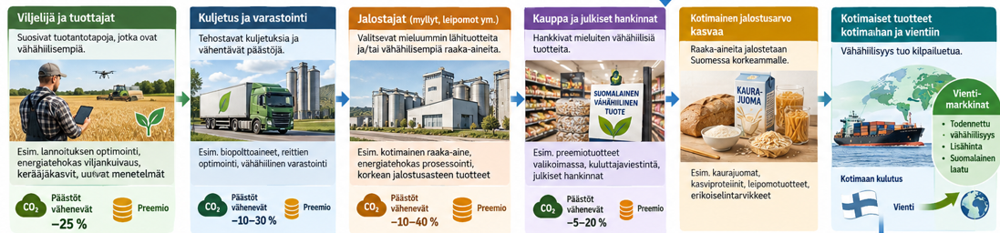
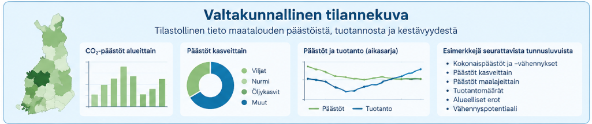
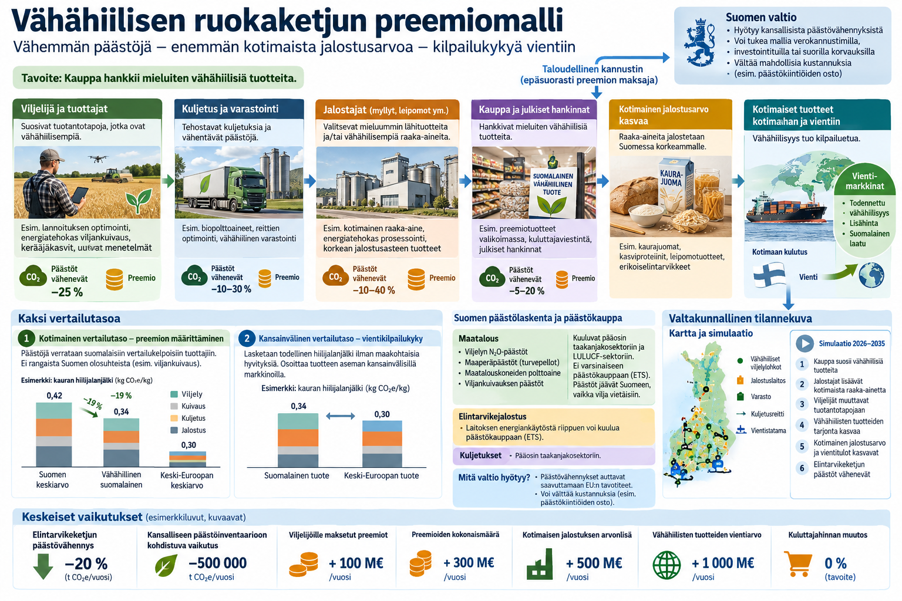

Arvioitu velvoitevaje
Ilmastopaneelin skenaario, jonka VTV esittelee raportissaan. Luku koskee koko maankäyttösektoria, ei yksin maataloutta.
Entä jos jokainen ruokaketjun toimija hyötyisi siitä, että tuottaa vähemmän päästöjä — ja suomalainen ruoka jalostettaisiin pidemmälle kotimaassa?
Preemiomalli tekee todennetusta vähähiilisyydestä taloudellisen kannustimen. Viljelijä, kuljettaja ja jalostaja voivat saada korvauksen omista päästövähennyksistään.
Kauppa suosii vähähiilisiä tuotteita. Julkinen sektori voi tukea todellisia päästövähennyksiä. Kotimaan kuluttajahinta pyritään pitämään ennallaan.

Vertailukelpoiset CO₂e-datatuotteet.
Korvaus päästöjä vähentäneille.
Raaka-aineesta vientikelpoiseksi tuotteeksi.
Valitse kortti ja tutustu siihen, miten päästöjä voidaan vähentää ja miten preemio voisi syntyä.
Vähähiilinen suomalainen vilja voidaan jalostaa kotimaassa esimerkiksi kauratuotteiksi, kasviproteiineiksi ja korkean jalostusasteen elintarvikkeiksi.
Viennissä todennettu hiilijalanjälki voi auttaa erottumaan. Kotimainen jalostus kasvattaa potentiaalisesti arvonlisää — mutta sen päästövaikutukset arvioidaan erikseen.

Suomen olosuhteet, kuten viljankuivauksen tarve, vaikuttavat päästöihin. Siksi preemiokelpoisuutta ja kansainvälistä kilpailukykyä ei pidä sekoittaa.
Suomen EU-ilmastovelvoitteiden täyttämiseen liittyy kustannusriski. Kotimaisia, todennettuja päästövähennyksiä kannattaa vertailla päästöyksiköiden hankinnan vaihtoehtoiskustannuksiin.
Ilmastopaneelin skenaario, jonka VTV esittelee raportissaan. Luku koskee koko maankäyttösektoria, ei yksin maataloutta.
Laskennallinen kustannushaarukka ilman erityisjouston vaikutusta. Ei toteutunut maksu eikä ennuste päästöyksiköiden markkinahinnasta.
VTV korostaa tarvetta vertailla kotimaisten päästövähennystoimien kustannuksia päästöyksiköiden mahdollisiin hankintahintoihin.
Valtio voisi harkita kannustimia, jos maataloudessa syntyvät lisäiset ja todennetut päästövähennykset pienentävät Suomen velvoitevajetta kustannustehokkaasti. Tuotteen hiilijalanjäljen pieneneminen ei yksin osoita kansalliseen velvoitteeseen hyväksyttävää vähennystä.
Preemiomalli ei ole vain hiilijalanjälkilaskuri. Se edellyttää useiden itsenäisten toimijoiden tiedon yhdistämistä, päästövähennysten todentamista ja hyötyjen oikeudenmukaista kohdentamista. Data-avaruus tarjoaa tähän yhteiset pelisäännöt ja tekniset rakennuspalikat.
Lohkot, maalajit, panokset, satomäärät ja laskennan tulos.
Datatuote: eräkohtainen hiilijalanjälkiErätunniste, kuljetusmatka, kuorma ja päästöt.
Datatuote: kuljetuksen päästöosuusRaaka-aine-erät, energia, saanto ja tuotekohtainen laskenta.
Datatuote: tuotteen hiilijalanjälkiTuote-erän alkuperä, vertailutaso ja väitteiden perusteet.
Datatuote: todennettu vähähiilisyystietoYhteiset sanastot, metatiedot, yksiköt ja erätunnisteet tekevät eri järjestelmien tiedoista yhdistettäviä. Datatuote kertoo myös laskentamenetelmän ja tietojen alkuperän.
Viljelijän ei tarvitse luovuttaa kaikkea raakadataansa. Käyttöoikeudet, sopimukset ja rajapinnat määrittävät, kenelle ja mihin tarkoitukseen tietoa välitetään.
Ketjun eri vaiheiden päästöt ja vähennykset voidaan jäljittää lähteisiin. Sama vähennys ei saa tuottaa preemiota usealle toimijalle, eikä tuotteen jalanjälkeä pidä sekoittaa kansalliseen päästöinventaarioon.
Valtakunnallinen palvelu voisi vastaanottaa sovitut, todennetut yhteenvedot ja näyttää päästövähennysten määrät, kohdentumisen ja mahdolliset preemiot. Viranomaiskäyttöön soveltuva vaikutusarvio edellyttää lisäksi erillistä yhteyttä kansallisen päästöinventaarion menetelmiin.
Laskentapalvelut voivat tuottaa datatuotteita kahteen eri käyttöön: ruokaketjun toimijoille eräkohtaisen hiilijalanjäljen ja tilannekuvapalvelulle luvitetun, tilastollisesti yhdisteltävän yhteenvedon. Näin tieto syntyy siellä, missä toiminta tapahtuu, mutta valtakunnallinen näkymä ei edellytä kaiken raakadatankaan keskittämistä.
Kasvi, maalaji, pinta-ala, lannoitus, polttoaine, kuivatus ja sato.
Lohkon päästökomponentit, laskentamenetelmä, vuosi ja epävarmuus.
Sovitut mittarit, alue- ja kasviluokat sekä käyttöoikeudet.
Päästöt, päästöintensiteetti ja kehitys alueittain ja vuosittain.
Kun lohkolaskentaa tehdään eri tiloilla samalla menetelmällä, voidaan seurata esimerkiksi ohran ja kauran päästöintensiteettiä, turve- ja kivennäismaiden eroja sekä päästöjen muutosta vuosittain. Alueelliset yhteenvedot muodostetaan riittävän suurista aineistoista, jotta yksittäisten tilojen tiedot eivät paljastu.
Kuljetusyritysten reitti-, kuorma- ja polttoainetiedot voisivat tulla kuljetustenhallinnasta; jalostajien energiankäyttö, tuotantomäärät ja saannot tuotannonohjauksesta; kaupan hankinta- ja tuotetiedot omista järjestelmistä. Yhteiset datatuotemallit ja rajapinnat mahdollistaisivat vertailukelpoiset yhteenvedot myös näistä vaiheista.

Tämä on ehdotus tulevasta toteutusarkkitehtuurista, ei väite jo käytössä olevasta automaattisesta todentamis- tai preemiojärjestelmästä.
Vaihda viljelijän ja valtion tilannekuvan välillä. Säätimet päivittävät laskelmat heti. Viljojen vertailukertoimet perustuvat Luken kokoamiin tutkimustuloksiin; tilakohtaiset päästöt, vähennysprosentit ja preemiot ovat simuloituja oletuksia.
Laskuri käyttää Luken raportista poimittuja tutkimuspohjaisia viljakohtaisia vertailuarvoja. Tilan todellisia päästöjä ei mitata eikä lasketa tilan lähtötiedoista: päästöero ja preemio ovat käyttäjän valitsemaan oletukseen perustuva skenaario.
Kokeile eri skenaarioita. Muuta säätimiä ja seuraa tuloksia. Jokaisen säätimen ⓘ-painikkeesta saat lisätietoa sen merkityksestä, vaikutuksesta ja lähtöarvon luonteesta. Tulokset eivät ole mitattuja päästöjä tai ennusteita.
Preemio on esimerkkimallin tulos, ei nykyinen tuki. Keskimääräistä pienempi hiilijalanjälki ei yksin osoita lisäistä päästövähennystä.
Tämä on tilastollisiin tutkimustuloksiin perustuva havainnollistava laskelma, ei todellinen tilakohtainen hiilijalanjälkilaskenta. Kauran ja ohran vertailuarvot perustuvat Suomessa tuotettujen rehuviljojen elinkaariarviointeihin. Laskuri ei käytä tilan lohko-, maalaji-, lannoitus-, satotaso- tai energiankulutustietoja.
Laskentatapa: kauran tonnit × 0,60 + ohran tonnit × 0,50 = vertailutason päästöt (t CO₂e). Oletetut tilan päästöt = vertailutaso × (1 − valittu päästöeroprosentti). Laskennallinen preemio = päästöero (t CO₂e) × valittu €/t × preemio-osuus.
Tulkintarajoitus: pienempi tuotekohtainen hiilijalanjälki ei sellaisenaan osoita toteutunutta, lisäistä tai kansalliseen päästöinventaarioon hyväksyttävää päästövähennystä. Todellinen preemio edellyttäisi tilakohtaista lähtötietoa, vertailukelpoista laskentaa ja todentamista.
Mistä erot voivat syntyä? Luken mukaan viljelymenetelmät, typpilannoitus, satotaso, energiankulutus ja maalaji vaikuttavat tuloksiin. Turvemaiden päästöt voivat kasvattaa hiilijalanjälkeä huomattavasti; orgaanisella maalla viljellyn kauran ilmastovaikutus voi tutkimuksen mukaan olla jopa 12-kertainen kivennäismaahan verrattuna. Tätä maalajieroa ei huomioida demossa.
Lähde: Luonnonvarakeskus (2025), Luonnonvara- ja biotalouden tutkimus 73/2025, luku 2.3.7 ”Viljat”, s. 32–33, ja taulukko 2. Raportin viitteet: Hietala ym. (2022d), Saarinen ym. (2014) sekä maalajivertailussa Lehtilä ym. (2024).
Tämä on tilastollisiin esimerkkioletuksiin perustuva valtakunnallinen skenaario, ei Suomen toteutuneiden päästöjen tai kustannussäästöjen laskelma. Valitse kuvitteellisen ruokaketjun tuotantomäärä, hiilijalanjälki ja päästöero sekä tarkastele mahdollista preemioiden jakoa.
Kokeile eri skenaarioita. Muuta säätimiä ja seuraa tuloksia. Jokaisen säätimen ⓘ-painikkeesta saat lisätietoa sen merkityksestä, vaikutuksesta ja lähtöarvon luonteesta. Tulokset eivät ole mitattuja päästöjä tai ennusteita.
Skenaariolaskelma: julkinen preemio ei ole voimassa oleva järjestelmä. Eri toimijoiden vähennykset voivat kuulua eri EU-sektoreille. Sama päästövähennys palkitaan vain kerran.
Tämä on tilastollisiin esimerkkiarvoihin perustuva simulaatio, ei todellinen valtakunnallinen päästötilasto tai valtiontalouden vaikutusarvio. Laskuri ei hae maatilojen päästötietoja, tuotantoketjujen mittauksia, kansallista päästöinventaariota eikä toteutuneita preemiomaksuja. Valtakunnalliseen tilannekuvaan voitaisiin myöhemmin tuoda vain sovittuja, yhdistettyjä ja riittävästi anonymisoituja tilastotietoja.
Laskentatapa: vertailupäästöt (t CO₂e) = lopputuotteen määrä (t) × oletettu ruokaketjun hiilijalanjälki (kg CO₂e/kg). Laskennallinen ero (t CO₂e) = vertailupäästöt × oletettu päästöeroprosentti. Skenaarioarvo (€) = ero × oletettu €/t CO₂e. Preemiot (€) = skenaarioarvo × jaettava osuus. Valtion hypoteettinen nettohyöty (€) = skenaarioarvo − preemiot. Toimijoiden prosenttiosuudet jakavat preemiosumman, eivät todennettuja päästövähennyksiä.
Mihin luvut perustuvat? Luken raportin mukaan rehuviljan hiilijalanjälki on kauralla noin 0,60 ja ohralla sekä vehnällä noin 0,50 kg CO₂e/kg; rukiin arvio on noin 0,80 kg CO₂e/kg. Nämä ovat viljatuotteiden tutkimuspohjaisia vertailuarvoja, eivät koko ruokaketjun päästökertoimia. Siksi tämän näkymän 1,00 kg CO₂e/kg on erillinen havainnollistava oletus, ei Luken ilmoittama valtakunnallinen keskiarvo.
Tulkintarajoitukset: tuotekohtaisen hiilijalanjäljen ero ei automaattisesti ole lisäinen tai Suomen kansalliseen päästöinventaarioon kirjautuva vähennys. Myöskään laskurin €/t-arvo ei ole virallinen valtion vältetty kustannus. Kansallisen vaikutuksen arviointi vaatisi sektoreittaisen päästöinventaarion, todellisen vertailuvuoden, menetelmien yhteensovittamisen ja kaksinkertaisen laskennan estämisen. Turvepeltojen päästöt, satotaso ja viljelymenetelmät voivat muuttaa tuloksia merkittävästi.
Lähde viljakohtaisille taustaluvuille: Luonnonvarakeskus (2025), Luonnonvara- ja biotalouden tutkimus 73/2025, luku 2.3.7 ”Viljat”, s. 32–33 ja taulukko 2 (Hietala ym. 2022d; Saarinen ym. 2014). Ruokaketjun kokonaiskerroin, päästöero, €/t-arvo, preemioiden jako ja valtion nettohyöty ovat tämän demon omia oletuksia.

Konseptin yleiskuva. Kuvan luvut ovat havainnollistavia esimerkkejä, eivät vaikutusarvioita.